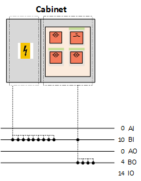
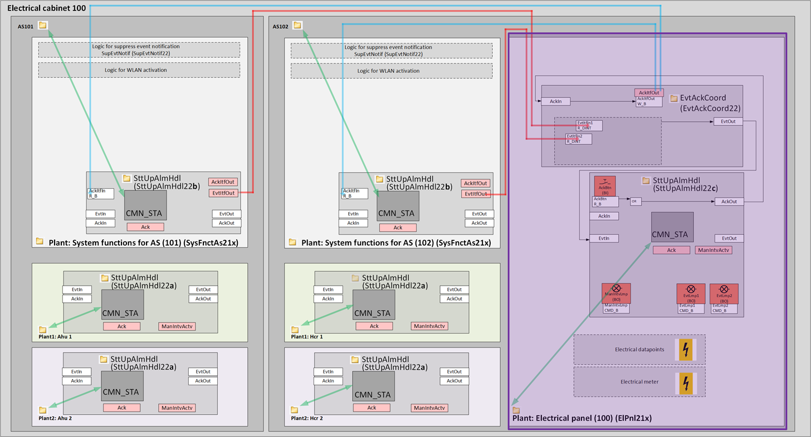
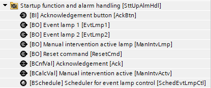
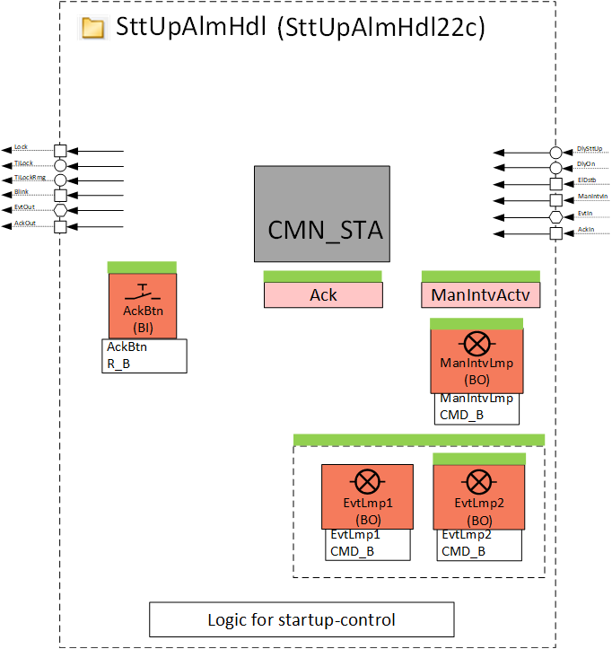
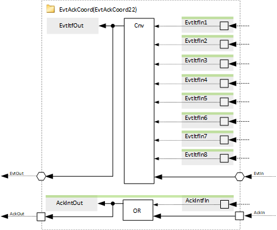
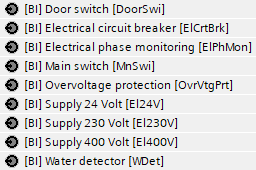
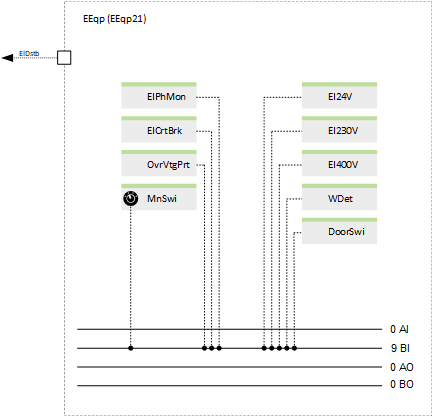
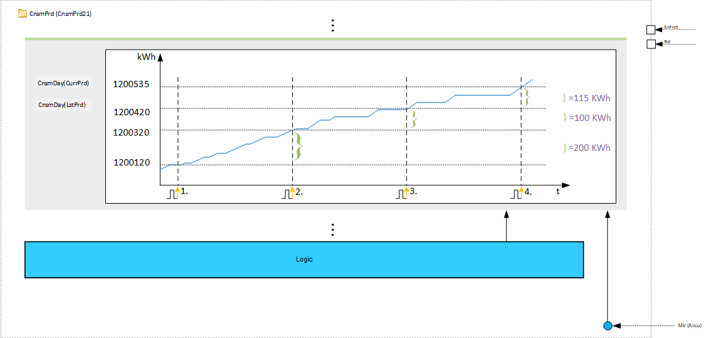

[ElPnl21x] Electrical panel (all options)
Name: [ElPnl21x] Electrical panel (all options)
Library hierarchy: Plants
ElPnl21x is a plant that contains electrical data points, alarm lamps, and an acknowledge button.

Instantiate ElPnl21x once in one automation station in the electrical cabinet.
Plant operating modes
- None
Plant diagram


Main functions | Main components |
|---|---|
|
|
Program blocks
Startup function and alarm handling | |
[SttUpAlmHdl22c] Startup and alarm handling, 3 priorities at electrical cabinet | |
 |  |
Event and acknowledge coordination (Optional) | |
[EvtAckCoord22] Event and acknowledge coordination with 3 priorities | |
|  |
Electrical equipment (Optional) | |
 |  |
Electric meter (Optional) | |
|  |